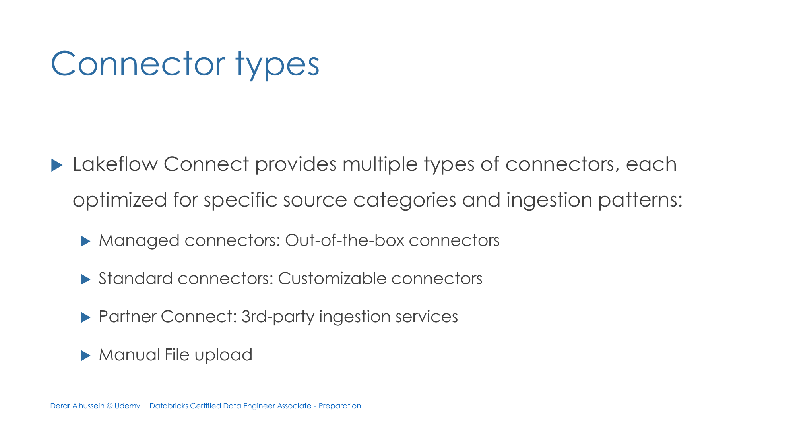
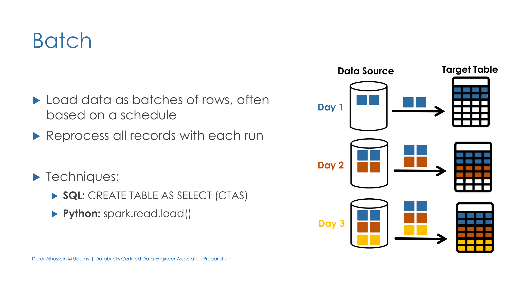
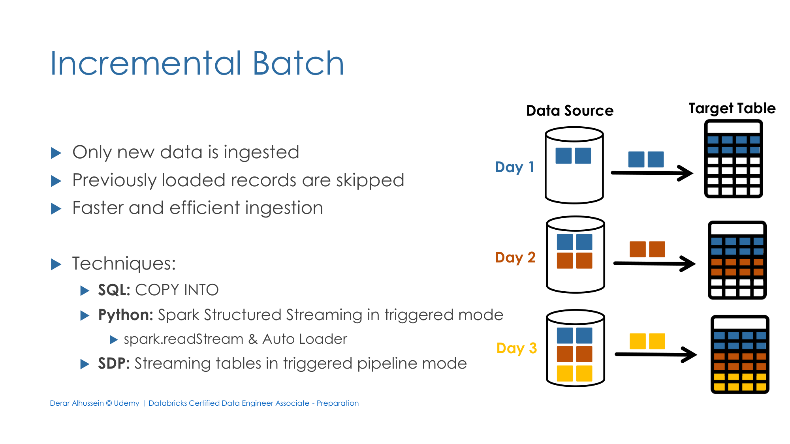
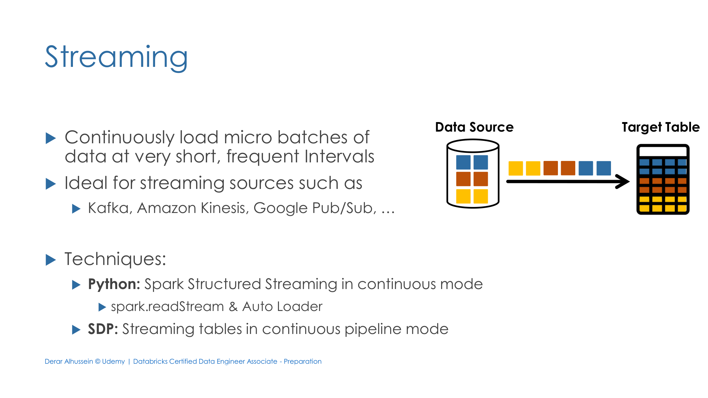

Section 2 · Data Ingestion and Loading · Quelle: Udemy-Kursmaterial „Lakeflow Connect“, ergänzt mit Databricks-Dokumentation
Die vorangegangenen Kapitel dieser Section haben einzelne Ingestion-Techniken im Detail behandelt – CTAS, COPY INTO, Auto Loader (Kapitel 1 & 6) sowie Managed Connectors und Partner Connect (Kapitel 4). Dieses Kapitel liefert die übergeordnete Landkarte dazu: die offizielle Einteilung in vier Konnektortypen und drei Ingestion-Modi, wie sie auch im Exam Guide verwendet wird – inklusive einer Entscheidungsregel, wann welcher Konnektortyp sinnvoll ist.
Lakeflow Connect gliedert sämtliche Ingestion-Wege in vier Kategorien, jede für einen anderen Anwendungsfall optimiert:
| Konnektortyp | Charakteristik | Details in |
|---|---|---|
| Managed Connectors | Out-of-the-box, low-code/no-code, für konkrete Enterprise-Quellen (Salesforce, Workday, SQL Server, …) | Kapitel 4 dieser Section |
| Standard Connectors | Anpassbar, erfordern eigenen Python-/SQL-Code (Auto Loader, COPY INTO, CTAS, Structured Streaming) | Kapitel 1 & 6 dieser Section |
| Partner Connect | Drittanbieter-Dienste (z. B. Fivetran, Qlik, Informatica) für Quellen ohne eigenen Managed Connector | Kapitel 4 dieser Section |
| Manual File Upload | Lokale Dateien direkt über die Databricks-Oberfläche hochladen | siehe Abschnitt 3 unten (neu) |

Unabhängig vom gewählten Konnektortyp lässt sich jede Ingestion einem von drei Mustern zuordnen – eine Unterscheidung, die im Exam Guide explizit als „batch, streaming, and incremental loading“ benannt wird:
Daten werden als abgeschlossene Charge geladen, oft zeitgesteuert – bei jedem Lauf wird der gesamte Datensatz aus der Quelle erneut verarbeitet.
-- SQL: CREATE TABLE AS SELECT (CTAS)
CREATE TABLE bronze_orders AS SELECT * FROM read_files('/Volumes/.../orders', format => 'csv');
# Python: einmaliges Batch-Read
df = spark.read.load("/Volumes/.../orders")

Nur neu hinzugekommene Datensätze werden geladen, bereits verarbeitete Dateien automatisch übersprungen – schneller und ressourcenschonender als klassisches Batch.
-- SQL: COPY INTO (idempotent) COPY INTO bronze_orders FROM '/Volumes/.../orders' FILEFORMAT = CSV;
# Python: Spark Structured Streaming im Trigger-Modus (einmalig ausfuehren, dann stoppen)
(spark.readStream.format("cloudFiles").option("cloudFiles.format", "csv")
.load("/Volumes/.../orders")
.writeStream.trigger(availableNow=True)
.toTable("bronze_orders"))
In Lakeflow Declarative Pipelines (SDP) entspricht dies einer Streaming Table im getriggerten Pipeline-Modus (die Pipeline läuft, verarbeitet neue Daten und stoppt wieder, statt dauerhaft zu laufen).

Daten werden kontinuierlich in sehr kurzen, häufigen Intervallen (Sekunden bis Minuten) als Micro-Batches verarbeitet – ideal für Quellen wie Apache Kafka oder Amazon Kinesis, bei denen nahezu Echtzeit-Aktualität gefragt ist.
# Python: Spark Structured Streaming im kontinuierlichen Modus (laeuft dauerhaft)
(spark.readStream.format("cloudFiles").option("cloudFiles.format", "json")
.load("/Volumes/.../events")
.writeStream.toTable("bronze_events"))
In SDP entspricht dies einer Streaming Table im kontinuierlichen Pipeline-Modus.

Für einmalige, kleine Datenmengen – etwa eine lokale CSV-Datei zum Ausprobieren – lässt sich eine Datei auch ganz ohne Code direkt über die Databricks-Oberfläche hochladen. Dabei stehen zwei Ziele zur Wahl: die Datei kann direkt in eine neue Delta-Tabelle importiert werden, oder unverändert in ein Unity-Catalog-Volume abgelegt werden, um sie von dort aus z. B. per read_files() weiterzuverarbeiten.
Bei mehreren infrage kommenden Optionen empfiehlt Databricks, sich von der am stärksten verwalteten Ebene abwärts vorzuarbeiten und erst dann eine Ebene tiefer zu gehen, wenn die aktuelle Ebene die Anforderungen nicht erfüllt oder die Datenquelle nicht unterstützt:
COPY INTO bleibt dabei als einfacher, transaktionaler Batch-Befehl vor allem für Ad-hoc-Backfills und klar abgegrenzte historische Ladevorgänge sinnvoll, während CREATE STREAMING TABLE mit read_files() für SQL-Nutzer inzwischen als die skalierbarere, empfohlene Alternative für inkrementelle Ingestion gilt.